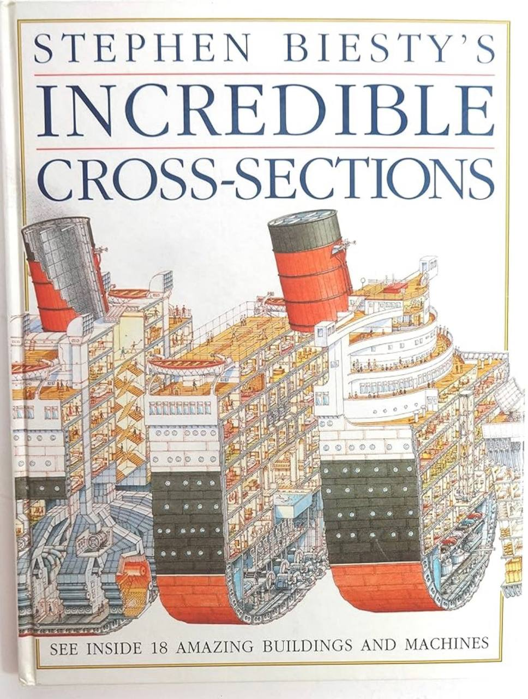

busq.ai
Dados imobiliários para análises melhores
Produto em construção para transformar dados dispersos de mercado, transações, geografia e fontes públicas em inteligência operacional para decisões imobiliárias.
Abrir nota do projetoEste é o meu espaço para organizar o que venho aprendendo ao transformar curiosidade em aplicações práticas. Vou escrever sobre projetos, ideias e testes com tecnologia em situações reais, com o olhar de quem está colocando essas ferramentas para trabalhar.
Projetos em andamento
busq.ai
Produto em construção para transformar dados dispersos de mercado, transações, geografia e fontes públicas em inteligência operacional para decisões imobiliárias.
Abrir nota do projetoMoob
Experimento de produto para analisar postura, movimento e evolução física usando captura visual, feedback estruturado e acompanhamento contínuo.
Abrir nota do projetoMFO second brain
Sistema interno para organizar informações, reduzir atrito operacional e criar uma memória utilizável para decisões, comunicação e acompanhamento.
Abrir nota do projetoNotas de campo
O nome pode mudar. A intenção aqui é separar ideias mais conceituais dos projetos vivos: opiniões, aprendizados, frameworks pessoais e relatos de implementação.
01
02
03
Sobre
Sempre tive curiosidade para entender como as coisas funcionam.
Fui aquela criança espirituosa que desmontava o relógio da sala para ver o que fazia os ponteiros girarem. Confesso que, depois do encontro com a minha curiosidade, diversas vezes eles não voltavam, mas nunca por falta de vontade minha.
Uma das primeiras memórias de leitura que tenho é de Conhecer por dentro, de Stephen Biesty, que com suas ilustrações incríveis em corte acendeu ainda mais em mim essa vontade de compreender os mecanismos do mundo. Segundo minha mãe, foi depois do contato com essa obra-prima, e com alguns eletrodomésticos quebrados, que abri mão do meu sonho até então: ser frentista. Eu ficava fascinado com a possibilidade de estar perto de carros diferentes o dia todo, ainda mais podendo ser pago pra isso.

Com os anos, essa curiosidade não só se manteve como evoluiu para uma vontade mais participativa: a vontade de criar. Para o bem e para o mal, desde que saí da faculdade de engenharia, o que constantemente me motiva é poder participar desde a concepção de iniciativas que estão saindo do papel. Comecei pelo mercado financeiro, como bom engenheiro, passei por construção modular, mobiliário urbano, desenvolvimento imobiliário e voltei ao mercado financeiro, mas sempre procurando a criação, e talvez um pouco de sarna para me coçar.
Nesse contexto, de alguns tempos para cá, tenho ficado extremamente impressionado com como as tecnologias disponíveis a quase todos têm facilitado o poder individual de criação. Acredito realmente que estamos no melhor momento da história para quem quer fazer algo novo, tirar algo do papel. Com muito interesse e poucos recursos, hoje se pode fazer muito. A máquina aprendeu a falar a nossa linguagem. A responder nossas dúvidas, ou ao menos grande parte delas. Formação técnica, apesar de desejável, é cada vez menos necessária.
Esse site nasce do encontro entre a antiga curiosidade e as ferramentas novas. Aqui vou organizar o que estou aprendendo enquanto testo, construo e aplico essas tecnologias em situações reais: algumas pessoais, outras profissionais, todas sempre em movimento.
Meus objetivos aqui são dois: difundir um pouco do conhecimento que tenho acumulado mexendo com casos práticos de aplicações criadas para facilitar a minha vida e a dos outros, e me comprometer ainda mais com o desenvolvimento dessas aplicações. Há conteúdo excelente sobre as ferramentas tecnológicas em si e sobre exercícios teóricos a respeito do futuro, feito por pessoas bem mais capacitadas que eu. Pretendo também compartilhar esse repertório aqui.
Não vou escrever do ponto de vista de quem observa a tecnologia de longe, mas de quem está tentando colocá-la para trabalhar.